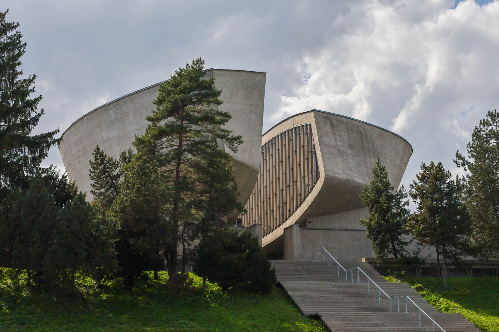
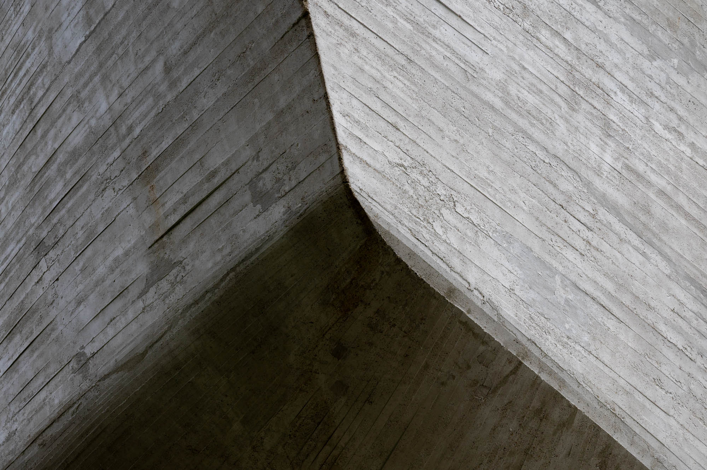
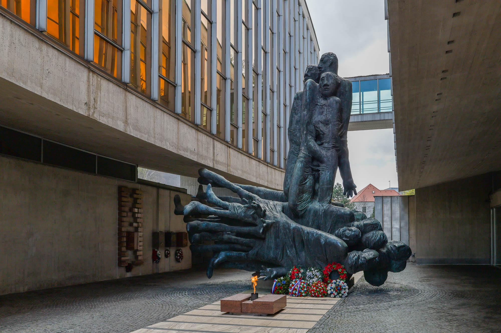
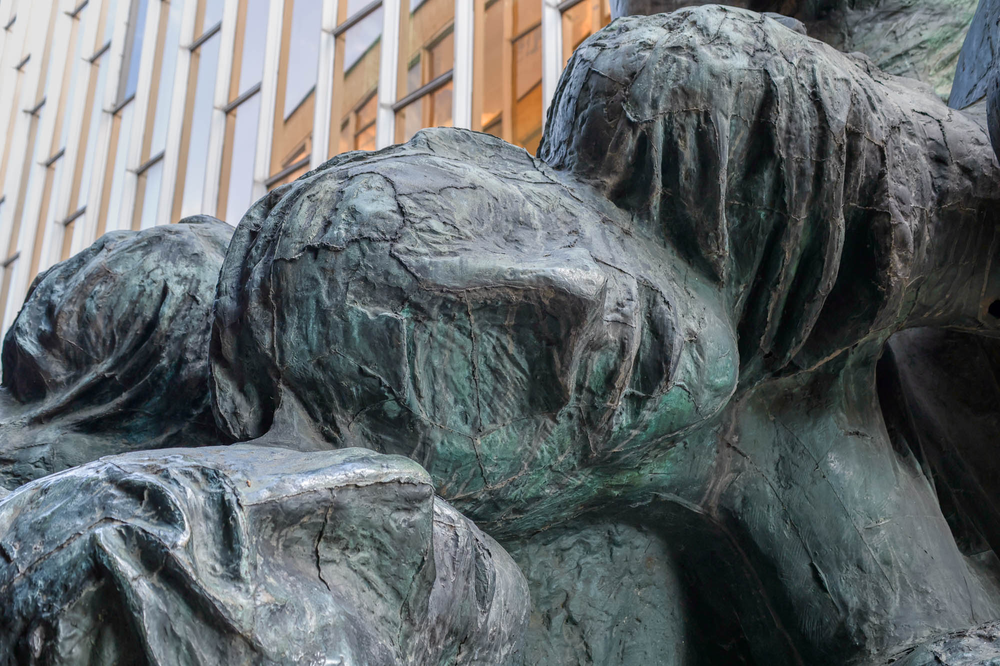
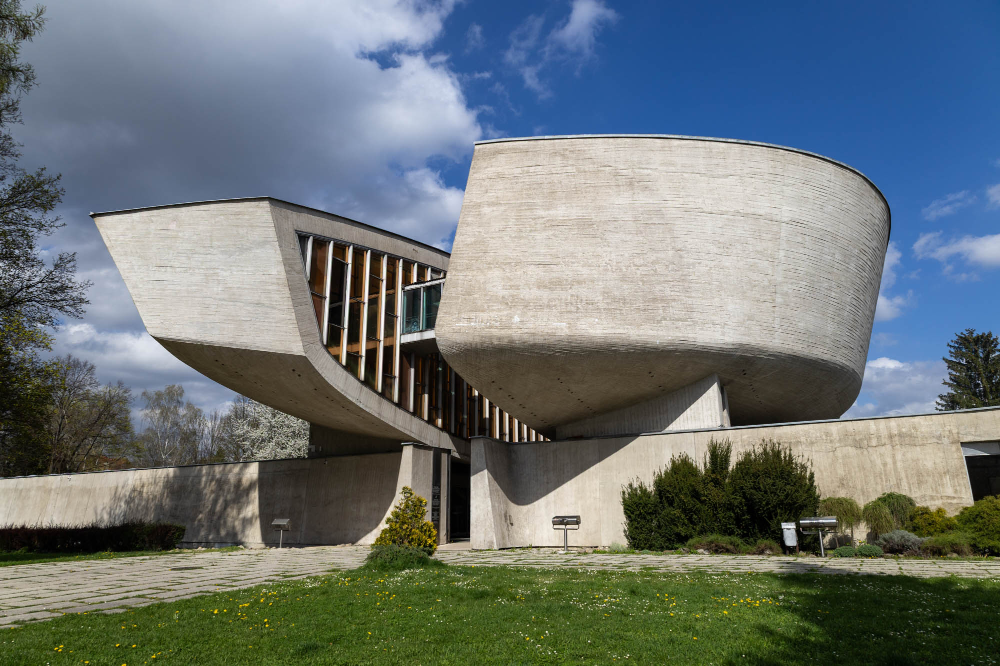

Inside this brutalist building is the story of how modern-day Slovakia came to exist: its union with Czechia, its struggles under fascism and communism, and its eventual return to independence.

The story begins shortly after the First World War (1914–1918) with the dissolution of the Austro-Hungarian Empire—a time when Europe’s structure was being dramatically reshaped. Ethnic groups sought independence and new unity, through ideas such as Pan-Slavism, but there was also concern that smaller countries would be more vulnerable if another global conflict arose.
This was the backdrop to the Martin Declaration, issued on October 30, 1918, in which Slovak representatives expressed their intention to join the Czechs in forming a common state.
This led to a democratic and prosperous decade for the newly formed First Czechoslovak Republic, which was among the 15 most developed countries in the world at the time. The population was diverse: alongside Czechs (around 51%) and Slovaks (approximately 16%), there were also Germans (22.5%), Hungarians (5.6%), Ruthenians (3.5%), Jews, Poles, and others.
These populations were distributed across four main regions: Bohemia, Moravia-Silesia, Slovakia, and Carpathian Ruthenia. While the Constitution guaranteed minority rights, relations with the German and Hungarian minorities were often strained.
Trouble first began for Czechoslovakia after the stock market crash of October 1929 and the spread of the Great Depression in Europe, leading to widespread unemployment. Many Slovaks emigrated to countries like the USA, Canada, Argentina, France, and Belgium. In the following years, tensions rose within Czechoslovakia as Czech businesses began relocating away from the German border out of fear of Nazi Germany’s growing aggression.
These fears were realized with the signing of the Munich Agreement on September 30, 1938, which marked the beginning of the Second Czechoslovak Republic and the loss of one-third of its territory to Germany, Hungary, and Poland. During this turmoil, the Slovak People's Party, led by Andrej Hlinka and later Jozef Tiso, intensified its calls for Slovak autonomy.
Its slogan: “One Nation, One Party, One Leader.”

Hitler exploited Slovak separatism as part of his political strategy. He presented Jozef Tiso with two options: either Slovakia could declare independence under German protection, or be left to its fate and likely be further partitioned by Hungary and Poland. Hitler’s plan succeeded.
On March 14, 1939, Slovakia declared independence, and the next day, German troops occupied the remaining Czech lands. This marked the end of the Second Czechoslovak Republic and the beginning of the Nazi-aligned Slovak Republic (1939–1945).
In July 1940, Hitler summoned Tiso to Salzburg and pressured Slovakia into aligning even more closely with Nazi Germany. The Germans dictated political changes, including adopting elements of National Socialist ideology. This made it clear to the Slovak people that their newly gained independence was limited and that Slovakia had effectively become a puppet state under Nazi control.

Following this alignment with Hitler, the Slovak government established a Propaganda Office and a State Security Headquarters, along with other fascist-style institutions such as Hlinka’s Youth and the Hlinka Guard. A concentration camp for political opponents was set up in Ilava, and anti-Jewish policies intensified.
Between 1939 and 1945, about 70,000 Jews were deported from Slovakia to Nazi concentration and extermination camps, mainly in Poland. The Slovak government paid Nazi Germany 500 Reichsmarks (about $4,500 USD today when adjusted for inflation) per deported Jew, under the false pretense of covering "resettlement" costs.
In reality, this was financial support for genocide and a symbol of Slovakia’s collaboration in the Holocaust.

Beginning in June 1941, the Slovak Army joined the German invasion of the Soviet Union, with around 100,000 Slovak soldiers deployed to the Eastern Front.
By 1943, partisan resistance groups began forming in Slovakia, inspired by similar movements in Yugoslavia. These groups included Soviet POWs, concentration camp escapees, and ordinary Slovaks. Despite being poorly equipped and repressed by the authorities, they continued resisting until the Red Army entered Slovakia.
After Nazi Germany’s defeat in 1945, the Third Czechoslovak Republic was formed, restoring the country’s pre-war borders. Czechia and Slovakia were reunited, and territories taken by Germany, Hungary, and Poland were returned. However, this democratic phase was short-lived. In February 1948, the Communist Party seized power in a coup, creating the Fourth Czechoslovak Republic, but this was a republic in name only. In 1960, the country was officially renamed the Czechoslovak Socialist Republic.
Communist rule brought events such as the Prague Spring (1968), along with surveillance by secret police, restricted travel to the West, and suppression of dissent.
On the other hand, it did help to reduce socio-economic inequalities between the Czech and Slovak populations.
It wasn’t until the Velvet Revolution of November 1989—a peaceful uprising that coincided with the collapse of the Soviet bloc—that change began. Though it took time post-revolution, Czechoslovakia officially dissolved on December 31, 1992, resulting in the creation of two independent countries that we know today: the Czech Republic (Czechia) and the Slovak Republic (Slovakia).
